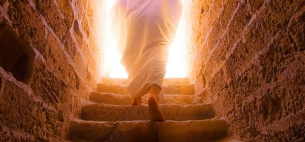

Contents

The inquiry at hand pertains to the fundamental question that we aim to address. The scholarly inquiry revolves around the theological conundrum of whether Yahushua, resurrected himself from death and whether he embodied the divine essence of יהוה, often translated as God, in human form. This inquiry merits careful consideration and analysis in order to arrive at a reasoned conclusion. The consequence of sin is mortality. It is a widely accepted belief that all humans are subject to mortality as a consequence of their sinful nature, including Yahushua.
The concept of יהוה's immortality is founded on the belief in His eternal nature, which precludes the possibility of His death. This statement embodies a paradox and sacrilege. Even genuine, legitimate "sons of יהוה" who are born from the dead (Chazon/Revelation 1:5) cannot experience death. Only fully human individuals without divinity within them can perish.
Chazon/Revelation 1 5 and from יהושע Messiah, the trustworthy witness, the first-born from the dead, and the ruler of the sovereigns of the earth. To Him who loved us and washed us from our sins in His own blood,
Luqas/Luke 20 36 for neither is it possible for them to die any more, because they are like messengers and are sons of Elohim, being sons of the resurrection.
Below, we observe that Yahushua called out to the singular, living Elohim to rescue him from dying. Furthermore, it is evident that יהוה rescued Yahushua from death not due to his divine status, but as a result of his devout and obedient commitment to honouring their agreement as described in Zekaryah/Zachariah Chapter 3.
Iv’rim/Hebrews 5 6 … "YOU ARE A PRIEST FOREVER ACCORDING TO THE ORDER OF MELCHIZEDEK." 7 In the days of his [Yahushua] flesh [before his resurrection and therefore glorified body], He offered up both prayers and supplications with loud crying [true to his Name YahuSHUA] and tears to the One [יהוה] able to save him from death, and he was heard because of his piety. 8 Although he was a Son, he learned obedience from the things which he suffered.…
It is asserted that Yahushua was neither regarded as a deity nor as God incarnate, as such beliefs are considered blasphemous. Furthermore, it is contended that he had not yet achieved full status as a begotten son of יהוה. Rather, he, like all humans, had undergone a ceremonial immersion and had been given a promise of eventual resurrection. Yahushua was required to atone for sin by enduring the consequences of physical death. Our perception has been significantly influenced by the deceptive influence of the False Messiah, leading to the widespread usage of blasphemous language and a reluctance to embrace the Truth. Despite the clear proclamation in Scriptures that Yahushua was born as a human to David's offspring and subsequently became fully divine through the resurrection, a sense of spiritual apathy has clouded our ability to perceive this reality. As a result, we are unable to recognize this truth independently.
Yochanan Aleph/1 John 4 – The Spirit of the False Messiah is “incarnation” 1 Beloved, do not believe every spirit, but test the spirits to see whether they are from יהוה, because many false prophets have gone out into the world (claiming to be the incarnation of יהוה. Yahushua consistently upheld the Shema and refrained from claiming to be God-incarnate, distinguishing himself from others who asserted such divine status when questioned on the matter).
2 By this you know the Spirit of יהוה: every spirit that confesses that Messiah יהושע has come in the flesh (a human) is from יהוה; 3 and every spirit that does not confess יהושע has come in the flesh (but says יהוה came in the flesh) is not from יהוה; this is the spirit of the antichrist (or False Messiah).
12 No one has seen יהוה at any time! (Because Yahushua is not יהוה in the flesh or a demi-god).
We are taught in Christianity that “Jesus paid the price for us, he bore our sin, he kept the Law so we don’t have to keep it, he died so we can live, he was God the Father become the Son in the Flesh”. Just like that, just utter the name “Jesus” ... and you are in the clear, no need to do anything else, you can be lawless and sin all you like; Grace will cover you because God died for you. That is another Gospel message!
Yahushua showed obedience to his appointed role as the Messiah, as described by יהוה in Zachariah Chapter 3, and served as a model for us to follow in our own lives. Yahushua took on the role of the scapegoat and sin offering by carrying our sins, and this was approved by יהוה. Because of this sacrifice, we can now directly come before יהוה's Throne. Yahushua did not carry the responsibility of making up for our sins through his death, as we still have to face the consequences of sin through physical mortality. Moreover, it is incorrect to assign complete sacrifice for the benefit of humanity to Yahushua. To conquer death, it is essential that we follow his lead. In line with traditional religious customs, it is our responsibility to follow the lead by undergoing the ritual cleansing of sin through Mikvah, showing our dedication to obey divine law through a symbolic circumcision of the heart, and symbolically offering our lives at the altar during the celebration of Passover, effectively taking on the role of living sacrificial lambs.
Yochanan/John 14 6 Yahushua answered, "I am (his example is) the way and (his example is) the truth and (his example is) the life. No one comes to the Father except through me (in covenant with him by following his example).
Yochanan/John 13 15 “For I gave you an example (a true way that leads to eternal life), that you should do as I have done to you.
Kepha Aleph/1 Peter 2 21 But if you suffer for doing good (obey the Torah) and you endure it (you will be conformed to the image of Yahushua, Rom. 8:29 and Qorintiyim Bet/2 Cor. 3:18, who was perfected through suffering), this is commendable before יהוה. 21 To this (to be conformed to the image of His son) you were called, because the Messiah suffered (on Pesach) for you (and tore the veil giving you access to the Altar of יהוה), leaving you an example (of what to do as he fulfilled the spiritual meaning of Pesach/Passover), that you should follow in his steps (being Mikvah’d, demonstrating a circumcised heart, and bring your own offering on Pesach to the Altar of יהוה).
Yahushua did not complete everything for us, but he followed יהוה's commands and set a righteous example for us to follow. By doing this, יהוה pledged to pardon our sins and remove the sentence of death against us, as Sha’ul mentioned. IF we model our behaviour after him.
The death decree that יהוה covers is called ‘The Second Death’ (or rather the final spiritual death decree). He does not cover the first physical death decree; you still must die! The spiritual death decree (or second death) is ‘passed over’ for all who follow Yahushua’s example and put their faith in (and properly celebrate) Pesach/Passover. יהוה does not issue the final death decree, and we defeat death and live again if we “do this in remembrance of his example”. So we all, like Yahushua, must physically die and pay the price of sin as we inherited death in our bodies (not physical die on Passover, we give our lives on the altar as living sacrifices). It is Spiritual Death that we do not suffer because after we die, like Yahushua, we defeat death and are raised to eternal life by יהוה.
Everyone dies for their own sin!
Yahushua did not take on the punishment for our sins in our bodies, and he did not nullify the initial death sentence. We will still face death. Every living being must ultimately experience a natural end to its physical existence, or undergo a process of transposition, which is essentially a different type of physical demise. We are aware that יהוה's own laws prohibit anyone, including Yahushua, from being held accountable for another person's sin. Each individual is evaluated solely for their own wrongdoing.
Devarim/Deuteronomy 24 16 "The fathers shall not be put to death for the children, neither shall the children be put to death for the fathers: every man shall be put to death for his own sin."
We will all face the consequence of our sins through the experience of physical death, similar to how Yahushua did. יהוה would never break His own law by allowing Yahushua to die for our sins. Yahushua was only a "sin offering" in the sense that he obeyed יהוה and יהוה promised to forgive our sins after we die and pay the price for sin ourselves in our bodies. Yahushua experienced death like all humans do. Our bodies perish because of our own sins. Everyone has committed sins according to Rom. 3:23.
Romiyim/Romans 323 for all have sinned and fall short of the esteem of Elohim
There were no exceptions made in that statement, not even for the Messiah. The genetic code carries death from Adam, not sin. We all succumb to "sin"
and the inherited death sentence is considered valid. This fact is deeply troubling to us because we have been led to believe that Yahushua was a "God" and lived a life free from sin since birth. This goes against what is stated in the Scriptures, which clearly indicate that Yahushua was "perfected" and "learned obedience" through discipline. He was not inherently perfect or obedient at birth. Like all men, he was vulnerable to sin and ultimately faced death as the consequence of his own wrongdoing.
Iv’rim/Hebrew 58though being a Son, He learned obedience by what He suffered. 9And having been perfected, He became the Causer of everlasting deliverance to all those obeying Him
According to the text in Zekaryah/Zachariah Chapter 3, Yahushua underwent a process of Mikvah in order to receive forgiveness for his sins, a practice that is also relevant to our own spiritual purification. The concept of "Original Sin" is flawed and does not accurately represent the beliefs or principles of the Torah. The Scriptural doctrine asserts that through the transgression of a singular individual, Adam, against the divine law of יהוה, the concept of "sin" was introduced into the world, separate from the physical body, and consequently resulted in the commencement of decay and mortality in Adam's physical form. Subsequently, the genetic inheritance of mortality was transmitted to all humans, and the presence of sin became pervasive in the world.
Romiyim/Romans 5 12 "Wherefore, as by one man… sin entered into the world, and death by sin (so death comes by your own sin not genetically); and so death passed upon all men, for that all have sinned (Yahushua died)"
According to scripture, the transmission of death, rather than sin, occurs in the human body, suggesting that individuals are not inherently born into a condition of "original sin." Human beings are born with an inherent susceptibility to moral transgression. The introduction of sin into the world, distinct from the human body, occurred as a consequence of a singular act of disobedience. It is a universally inherent genetic characteristic that death is inevitable for all individuals, as every human being is born with the condition of mortality. In this way the "law" of sin and you die by decree, called the Law of Sin and Death reigned over humanity, and we lived in bondage to the fear of death. It is this threat of death that held us captive not the Torah/Law of יהוה
Iv’rim/Hebrews 2 14 so that by his death he, יהושע, might break the power of him who holds the power of death—that is, the devil — 15 and free those who all their lives were held in slavery by their fear of death (not in slavery to the Law as Christianity teaches)
Melakim Bet/2 Kings 14 6 "But the children of the murderers he slew not: according unto that which יהוה commanded, saying, the fathers shall not be put to death for the children, nor the children be put to death for the fathers; but every man shall be put to death for his own sin."
Yehezqel/Ezekiel 18 20 “The being who sins shall die. The son shall not bear the crookedness of the father, nor the father bear the crookedness of the son. The righteousness of the righteous is upon himself, and the wrongness of the wrong is upon himself.”
Yehezqel/Ezekiel 33 20 “And you have said, ‘The way of יהוה is not fair.’ O house of Yisra’ěl, I shall judge every one of you according to his own ways.”
Yirmeyahu/Jeremiah 31 29 “In those days they shall no longer say, ‘The fathers ate sour grapes, and the children’s teeth are blunted.’ 30 “But each one shall die for his own crookedness – whoever eats sour grapes, his teeth shall be blunted.
As we read before the Torah/Law was weakened by our flesh, it is we who are not perfect! We were the weak link in the Torah, and our weaknesses made the Torah incomplete and prevented the Torah/Law from delivering eternal life as promised. The Torah had to be made complete through Grace (by covering the death decrees), in order for the Torah/Law to achieve its righteous outcome which is eternal life.
Mishle/Proverbs 3 1 My son, do not forget My Torah, but let your heart keep My commandments; 2 For length of days and years of life and peace they will add to you.
Devarim/Deuteronomy 11 20"You shall write them (the Torah) on the doorposts of your house and on your gates, 21 so that your days and the days of your sons may be multiplied on the land which יהוה swore to your fathers to give them, as long as the heavens remain above the Earth.
It is in this way Yahushua “fulfilled” the Torah/Law; he bridged the gap of our own weaknesses by covering the death decrees. Now, in covenant with Yahushua, the Law is complete and delivers eternal life for obedience as promised. This is called The Torah/Law of the Spirit that Leads to Life. However, this fleshly body predisposed to sin and designed genetically to die… must pay the price for our sin.
The consequence of sin is mortality ingrained in our DNA through the lineage of Adam. The concept of "physical death" is justified as a consequence of succumbing to the temptation of sin in this world. Each of us is responsible for our own actions leading to this outcome.
The Law of Sin and Death vs. The Law of the
Spirit of Life
It is crucial to comprehend that Yahushua demonstrated the path to living a life that is pleasing to יהוה and leads to resurrection from the dead. By following that route, humans can also conquer death in a similar manner.
The central message of The Covenant with Yahushua is that he overcame the power of sin and death by meeting the criteria of the Passover Lamb. Those who have made an agreement with him now experience freedom (from the fear of death) through what is known as the 'Law of the Spirit of Life'.
Let me define terms:
- The Torah/Law of יהוה – An all-encompassing term for the commands/law, ordinances, and decrees of יהוה. So when we say “the Law” we are referring to all 3 aspects combined:
Devarim/Deuteronomy 5 30 "Go, tell them to return to their tents. 31 But you stay here with me so that I may give you all the commands, decrees and ordinances you are to teach them to follow in the land I am giving them to possess."
As we read above, the Torah/Law contains commands, decrees, and ordinances.
- Commands also called Torah/Laws - In short, these encompass the 10 commandments, regulations on diet, laws pertaining to the judicial system, regulations on ritual purity, laws on sacrifices, and more.
- Ordinances – These are the set times, such as the Shabbat, and the designated spring and fall festivals.
- Decrees – These are the sacred rulings or legal decisions within the Torah that impose judgment upon us for breaking the rules and regulations within the Torah. The only thing that was "nailed to the stake" were the decrees, as our sins were forgiven by יהוה and covered by the blood of the lamb Yahushua, as described in Zekaryah/Zechariah Chapter 3.
- The Torah/Law - Collectively, the commands, decrees, and ordinances constitute what is referred to as 'the Law'. The first form of law mentioned by the Apostle Sha’ul/Paul is the "Law of Sin and Death. " Yahushua transformed the Law into what is now known as ‘the Law of the Spirit of Life’. Allow me to clarify and provide clear definitions for the terminology employed by the Apostle Sha’ul.
The Law of Sin and Death - The principle of sin and its consequences. The Torah/Law of יהוה, with its strict punishments for disobedience, has been passed down in written form from Adam to Mosheh. Each new law was accompanied by a judicial ruling for its violation. The initial law given in Eden was "do not eat the apple," followed by the warning "or you will definitely die. " That is the first place where the Law of sin and its consequence of death was initially introduced. As new laws were introduced over time, new judicial decrees were also implemented for each new law that was revealed by יהוה as He gradually disclosed the 'constitution' of His Kingdom. Because we have all committed sins, we were trapped by the consequences of death and held captive by the fear of dying.
The Law of the Spirit of Life - The principle of the life-giving spirit The blood of the Lamb (referred to as Grace) covers the death decrees of יהוה's Torah/Law. Sha'ul referred to the death decree as a 'certificate of debt' which we owed with our lives, and the covering of it was a gift we did not merit. This is how ‘Grace’ is defined. By cancelling the consequences of death and wiping away the debt we owed יהוה, we are brought back to a state of complete obedience and released from the bondage of fearing death. Through Mikvah and our belief in Yahushua as the Passover Lamb, our sins are forgiven and the decrees are fulfilled.
Qolasim/Colossians 2 13 And you, being dead in your trespassesc and the uncircumcision of your flesh, He has made alive together with Him, having forgiven you all trespasses, 14 having blotted out that which was written by hand against us – by the dogmasd – which stood against us. And He has taken it out of the way, having nailed it to the stake.
In effect the Torah/Law has remained unchanged, but it has been perfected or made whole through grace, which covers the death decrees in the Torah.
With the understanding of terms, it becomes clear what Sha’ul the Apostle is saying in Romiyim/Romans 1.
Romiyim/Romans 8 1 There is, then, now no condemnation (referring to the Death Decrees/Certificate of Debt) to those who are in Messiah יהושע, who do not walk according to the flesh, but according to the Spirit. 2 For the torah of the Spirit of the life (covenant with) in Messiah יהושע has set me free from the torah of sin and of death (the death decrees in the Law are covered and paid in full). 3 For the Torah being powerless (bring eternal life as promised), in that it was weak through the flesh(because we broke the Law and the decrees in the Law condemned us to death for disobedience), Elohim (provided Eternal Life as a free gift to those who try to keep the Law and fail i.e. Grace), having sent His own Son(firstborn) in the likeness of flesh of sin(as a man fully human), and concerning sin, condemned sin in the flesh(our genetic death sentence), 4 so that the righteousness of the Torah should be completed in us (who are Mikvah’d into the Yahushuaic Covenant and brought into total obedience to the Law) who do not walk according to the flesh(disobedient to the Law) but according to the Spirit.
Yahushua sought the act of immersion by Yochanan/John as a means to comply with the righteous demands of the Torah/Law and achieve a state of perfection.
Mattithyahu/Matthew 3 15 But יהושע answering, said to him, "Let me be Mikvah’d now; it is properly required in The Torah, for us to do this to fulfill all righteousness (have his sin washed away with Living Water)."
Following his departure, Yahushua sought refuge in the desert, where he was consecrated as High Priest by יהוה himself, who personally imparted this sacred role to him.
Zekaryah/Zechariah 3 3 Now Yahushua was dressed in filthy clothes as he stood before the angel. 4 The angel said to those who were standing before him, “Take off his filthy clothes.” Then he said to Yahushua, “See, I have taken away your sin and guilt (earlier through Mikvah), and I will put fine garments on you.”
Yahushua was setting the proper example that we all must follow to have our sin washed clean by יהוה with Living Water. Most people think walking according to the Spirit is somehow walking in some super spiritual state, letting the Spirit guide us while we completely ignore the Law. The Spirit Sha’ul is referring to is the Spirit of loving obedience to the Torah/Law prophesied in Yehezqel/Ezekiel 36: 26, 27).
Yahushua was demonstrating the right way for all of us to follow in order to have our sins cleansed by יהוה with Living Water. Many individuals believe that walking in the Spirit involves being in a highly spiritual state, where the Spirit guides us without any regard for the Torah/Law. Sha'ul is pointing to the Spirit as described in Yehezqel/Ezekiel 36 which is characterized by a deep commitment to following the Torah/Law obediently out of love.
Yehezqel/Ezekiel 36 26 “And I shall give you a new heart (for My Torah and write My Torah/Law on it) and put a new spirit within you spirit (of loving obedience). And I shall take the heart of stone (rebellion against the Torah or legalistic observance of the Torah out of fear of death) out of your flesh, and I shall give you a heart of flesh, 27 and put My (loving) Spirit within you. And I shall cause you to walk in My laws (the spiritual intend of it by the Father) and guard My right-rulings and shall do them.
Romiyim/Romans 85For those who live according to the flesh set their minds on the things of the flesh (and abolish the Torah of יהוה), but those who live according to the Spirit (of loving obedience to the Torah), the things of the Spirit (the Torah is Spiritual Rom. 7:14). 6For to be carnally minded is death (you’ll be judged by the decrees in the Torah), but to be spiritually minded is life and peace (because in loving obedience to the Torah the decrees against you are covered by the blood of the lamb resulting in peace and a spirit of comfort). 7Because the carnal mind is hatred against יהוה; for it is not subject to the Torah of יהוה, nor indeed can be. 8So then, those who are in the flesh cannot please יהוה (because they hate the Torah of יהוה and abolished it in their hearts).
Romiyim/Romans 7 13 Therefore did that which is good (the Torah) become a cause of death for me? May it never be! Rather it was sin, in order that it might be shown to be sin by effecting My death (through the death decrees) through that which is good, so that through the commandment, sin would become utterly sinful. 14 For we know that the Torah is spiritual, but I am of flesh, sold into bondage to sin.
Romiyim/Romans 2 13 For it is not those who hear the Torah who are righteous in יהוה’s sight, but it is those who obey the Torah who will be declared righteous.
Yahushua would send “the Comforter”
In Rom. 8:6, it is mentioned that being focused on spiritual matters brings about life and peace. Sha’ul is talking about the Spirit that Yahushua and Yehezqel foretold would provide comfort to us. We feel comforted knowing that the threat of death has been overcome and we are no longer held captive by the fear of sin and death. Sha'ul is suggesting that Yahushua made the death decrees in the Torah, which call for our death, null and void by nailing them to the stake with the blood of the Lamb. After Yahushua obediently died, the Torah of יהוה transformed into the Law of the Spirit of Life, as Yahushua eliminated our hostility (fear of death) towards the Torah.
By following Yahushua the Messiah, those who are in a covenant with him are able to perfectly obey the Torah/Law, fulfilling the righteous requirements just as Yahushua did when he was baptized to "fulfill all righteousness in him". יהוה forgives our sins and secures the record of our wrongdoing that led to our mortal demise. The commitment to follow the Torah/Law guarantees a life that never ends, so when the debt is absolved. We conquer death through resurrection just as Yahushua did. Now, in the Covenant with Yahushua, the Torah/Law has been changed to the Torah of the spirit of obedient love, that brings about eternal life. Sha’ul provides thorough discussion of this topic in the book of Qolasim/Colossians.
Qolasim/Colossians 2 13 And you, being dead in your trespasses (held captive to the death decrees) and the uncircumcision of your flesh (lost among the Gentile nations), יהוה made you alive together (in covenant) with Yahushua,, having forgiven you all trespasses (covered the death decrees), 14 having blotted out that which was written by hand against us – by the dogmas (death decrees in the Law, NOT THE LAW) – which stood against us. And He has taken it out of the way (that justifies our physical death), having nailed it to the stake.
If Yahushua was “God”, We are Dead in Our Sins!
The pattern of "being born and then dying as a result of our own sins, justifying our mortality" needed to be stopped by a man, just as it originally started with a man. If Yahushua was a half-god or God incarnate, the idea of reversing Adam’s actions would be meaningless. In order to overcome death, a man whose body had been genetically designed to age and die had to die as an innocent in the eyes of יהוה, by following His commands and achieving perfection through obedience. This was believed to be necessary because of the belief that all people have sinned. The Gospel conveys the powerful message that it is achievable for a person who has sinned to be made righteous and die blameless in the sight of יהוה through faith and Mikvah.
Innocent individuals cannot be bound by death, as death is the consequence of wrongdoing. יהוה must give the ultimate judgment for them to remain permanently deceased (the Second Death). יהוה planned for a human Messiah (predicted in both heavenly and earthly scriptures) to come and serve as a High Priest. This individual would attain perfection through adhering to the guidance of יהוה, becoming righteous through discipline, and purifying themselves of sin through Mikvah. Subsequently, they would live in total obedience to His Torah/Law as a High Priest. This is how Yahushua conquered death. He fulfilled his role as described in Zekaryah 3, which included mediating a peace covenant, reigning eternally as High Priest, and making atonement for the House of Zadok.
Zekaryah/Zechariah 3 A Vision of יהושע /Yahushua/Joshua the High Priest
1 And he showed me יהושע the high priest standing before the messenger of יהוה, and Satan standing at his right hand to be an adversary to him. 2 And יהוה said to Satan, “יהוה rebuke you, Satan! יהוה who has chosen Yerushalayim rebuke you! Is this not a brand plucked from the fire?” 3 And יהושע was dressed in filthy garments, and was standing before the messenger. 4 And He answered and spoke to those who stood before Him, saying, “Remove the filthy garments from him.” And to him He said, “See, I have removed your guilt from you, and shall put costly robes on you.” 5 And I said, “Let them put a clean turban on his head.” Then they put a clean turban on his head, and they put garments on him. And the messenger of יהוה stood by. 6 And the messenger of יהוה witnessed to יהושע, saying, 7 “Thus said יהוה of hosts, ‘If you walk in My ways, and if you guard My duty, then you shall also rule My house, and also guard My courts. And I shall give you access among these standing here. 8 Now listen, יהושע the high priest, you and your companions who sit before you, for they are men of symbol. For look, I am bringing forth My Servant – the Branch. [Or Sprout. See Isa_4:2, Isa_11:1, Jer_23:5, Jer_33:15, Zec_6:12.] 9 See the stone which I have put before יהושע: on one stone are seven eyes. See, I am engraving its inscription,’ declares יהוה of hosts, ’and I shall remove the guilt of that land in one day. 10 In that day,’ declares יהוה of hosts, ‘you shall invite one another, under the vine and under the fig tree.’ ”
Then, יהוה kept his promise and death was defeated in one day when forgiveness was granted for the sins of the land. יהוה fulfilled his end of the agreement and proclaimed "it is finished". Yahushua's belief in himself as the perfected Passover Lamb, after obeying and being baptized, ultimately saved him. This is the path we can all follow to reach יהוה, leading to our own resurrection. As we walk the same journey of resurrection as Yahushua.
Mattithyahu/Matthew 19 28 And יהושע said to them, “Truly I say to you, when the Son of Aḏam sits on the throne of His esteem, you who have followed Me in the rebirth, shall also sit on twelve thrones, judging the twelve tribes of Yisra’ěl. 29 “And everyone who has left houses or brothers or sisters or father or mother or wife or children or lands, for My Name’s sake, shall receive a hundredfold, and shall inherit everlasting life.
What is “that path we follow”?
Iv’rim/Hebrews 5 8 though Yahushua was a Son, yet he learned obedience (to יהוה) by the things which he suffered. 9 And having been perfected (by יהוה through obedience and suffering throughout his life and ultimately on Passover), Yahushua (his example) became the author of eternal salvation (forefather of everlasting life Yeshayahu/Isaiah 9:6-7) to all who obey יהוה (and follow Yahushua’s example Yochanan/John 1:12).
In simpler terms, Yahushua's life, which was perfected through following יהוה's Torah/Law, became the ultimate example of the pathway to eternal life.
His way is the true way that leads to eternal life. The
Truth, the Way, and the Life.
Yahushua, the Messiah, was the one who broke the "Law of Sin and Death" and died without guilt, ultimately defeating death. By the Messiah, the obedience of one man (who is not Elohim) led to the salvation from death. We observe that DEATH, not sin, was passed down genetically through Adam.
Yahushua, the Messiah, was the one who shattered the "Law of Sin and Death" and died without sin, ultimately conquering death. The salvation from death was achieved through the obedience of a single man, who is not divine but is still considered the Messiah, The Anointed One. We can see that it was death, and not sin, that was inherited from Adam through genetics.
The resurrection of the dead came through a "man" and not "God."
Qorintiyim Aleph/1 Corinthians 15 20 But now the Messiah is risen from the dead (by יהוה), and has become the first fruits of those who have fallen asleep (first born son of the resurrection Rom. 1:3-4). 21 For since by man (Adam) came death, by MAN (not God) also came the resurrection of the dead. 22 For as in (one human) Adam all die, even so in (one human), the Messiah, all (the sons of יהוה) shall be made alive (begotten by יהוה as sons through resurrection).
The principle of the spirit of life, also known as the Law of the Spirit of Life. A man who faithfully follows the Torah/Law, has his sins forgiven through Mikvah, shows genuine sorrow for his wrongdoing, and has a sincere and devoted heart [circumcised], then offers his life in service to יהוה as a sacrificial offering, will be granted the gift of eternal life. Yahushua, as a man, set the example for all the children of יהוה and is known as the "ancestor of eternal life," being deemed righteous in the sight of יהוה.
Those of us who follow in his example and obey יהוה, are also deemed as righteous. It's not just about having faith, but also about following the Torah, enduring suffering through faith, and commemorating Pesach/Passover in reference to Yahushua's sacrifice. Yahushua's sin offering is accepted by יהוה to atone for the consequences of the second death on our behalf. As a result, we are also cleared of guilt after death and will overcome death through resurrection.
Ya’aqov/James 2 16 Faith and Deeds (works of the Torah). Faith alone does not save, nor does deeds alone. You must have both. … but one of you says to them, “Go in peace, be warmed and be filled,” but you do not give them the bodily needs, what use is it? 17 In the same way, faith by itself, if it is not accompanied by action, is dead. 18 But someone will say, “You have faith; I have deeds.” Show me your faith without deeds, and I will show you My faith by My deeds. 19 You believe that there is one Elohim (The Shema). Good! Even the demons believe that—and shudder. … 24 You see that a person is considered righteous by what they do and not by faith alone…26 As the body without the spirit is dead, so faith without works of the Law is dead.
Yahushua, in his human form, consciously chose to resist fleshly desires and uphold moral righteousness following his Mikvah as High Priest. He demonstrated unwavering obedience to יהוה, even to the extent of willingly submitting to his own death, despite it not aligning with his personal will. The ultimate manifestation of Yahushua's selflessness is evident in his willingness to set aside his own desires and submit to the will of יהוה, ultimately sacrificing his life, demonstrating his love for his brethren.
This was יהוה’s plan from the beginning! Written in the stars before the foundation of the world... To literally perfect a human being (Yahushua) through suffering, making Yahushua our
"pioneer of our salvation" our "forefather of everlasting life" our ultimate example… all meaning the same thing.
יהוה planned our salvation by using his human Messiah, not by simply coming to Earth and dying. This plan has been in place from the beginning and was written in the stars. The prediction in Bereshit/Genesis foretold that the offspring of a woman would defeat the serpent. It was predicted by all his prophets, at his appointed times, and through numerous symbolic figures like Yoseph, David, Yahushua/Joshua, Sampson, and others. The purpose of יהוה was carried out through Yahushua.
Iv’rim/Hebrews 2 14 Since the children have flesh and blood (and are held captive to the Law of Sin and Death), he too shared in their humanity (he was human too and captive to genetic death) so that by his death, the death of a human, not God) he, Yahushua, might break the power of him who holds the power of death—that is, the devil— 15 and free those who all their lives were held in slavery by their fear of death. 16 For surely it is not angels he helps, but Avraham’s descendants. 17 For this reason (to break the Law of Sin and Death) he (Yahushua) had to be made like them fully human in every way, in order that he might become a merciful and faithful high priest (who are chosen from among men) in service to יהוה.
The Messiah had to be 100% human! Because the descendants of יהוה are originally human, the Messiah had to be born as a human in order to atone for them and defeat the grip of death. The Scriptures do not mention that יהוה needs to sacrifice Himself in order to save us. There is no mention in Scripture of יהוה making a promise to come to Earth and die, as it is not possible. Due to this fact, the Messiah was required to be mortal, and not divine or semi-divine.
He could not have possibly been the physical embodiment of יהוה. He had to behave as a human and he did. Iv’rim/Hebrews 2:17 asserts that Yahushua was completely human in every way. If he wasn't completely human, he wouldn't be able to fix what Adam, a fellow human, had done. Yahushua represents the opportunity for a new beginning, similar to Adam's second chance. A man introduced sin and death to humanity. It would require a man to remove them from the world.
Now, having demonstrated his ability to obey and resist the temptations of his own physical desires. Yahushua was selected by יהוה to be the High Priest forever, fulfilling the promise made to the House of Zadok.
He also inhabited a mortal body that was genetically destined to die, and that body had to be sacrificed in order for Yahushua to attain entry into the Kingdom of יהוה. As the High Priest of humanity, he was required to make that sacrifice. Now, let's take a closer look at Iv’rim/Hebrews 5 to demonstrate that Yahushua also had to make the Passover Sacrifice for himself. In verse 3, we observe that Yahushua is appointed as High Priest from among humanity. He is required to make offerings for sins, not only for the people but also for himself.
How could a man do all the work of salvation?
People often question how a man could possibly be responsible for all the work of salvation, and they insist that it must be the work of יהוה. This statement is false because it is impossible for יהוה to die or be tempted by evil. Additionally, it is explicitly mentioned that the Messiah had to be a human and that a human high priest had to sacrifice himself for the people and for his own sins. He had to undo the consequences of Adam's actions in this world. A man introduced sin into the world, and it took another man to remove it.
Iv’rim/Hebrews 5 1 For every high priest (Yahushua was the High Priest of Israel by bloodline of Zadok, consecrated High Priest by יהוה Zekayah/Zachariah 3) taken from among men is appointed (by יהוה) on behalf of men in things pertaining to יהוה, in order to offer both gifts and sacrifices for sins; 2 he can deal gently with the ignorant and misguided, since he himself also is beset with weakness; 3 and because of it he is obligated to offer sacrifices for sins, as for the people, so also for himself. 4 And no one takes the honor to himself, but receives it when he is called by יהוה, even as Aaron was. 5 So also Yahushua did not glorify himself so as to become a high priest, but יהוה who said to Yahushua "YOU ARE MY SON, TODAY I HAVE BEGOTTEN YOU"; 6 just as יהוה says also in another passage, "YOU ARE A PRIEST FOREVER ACCORDING TO THE ORDER OF MELCHIZEDEK." 7 In the days of Yahushua’s flesh (when he was fully human in every way Iv’rim/Heb. 2:17), Yahushua offered up both prayers and supplications with loud crying and tears to the One (God, יהוה, The Shema) able to save Yahushua from death (Yahushua did not rise from the dead, he was risen by יהוה), and Yahushua was heard because of Yahushua’s piety (NOT because he was a demi-god! But because of his reverent obedience to the Law see Zachariah Chapter 3). 8 Although Yahushua was a Son (not יהוה), Yahushua learned obedience (to the ONE GOD) from the things which he suffered. 9 And having been made perfect (Yahushua was not born perfect being simply a man), Yahushua became (he was not always, he BECAME after his submission and death on Passover) to all those who obey יהוה and follow Yahushua’s example, the source of eternal salvation (his example is our source), 10 being designated by יהוה as a high priest (from among men verse 1) according to the order of Melchizedek (see My book Melchizedek and The Passover Lamb). 11 Concerning Yahushua we have much to say, and it is hard to explain, since you have become dull of hearing. (that is a true statement especially today).
Sha’ul is essentially stating in the passage that a human High Priest was needed to make the ultimate sacrifice for both himself and those in alliance with him. In Zekaryah/Zachariah Chapter 3, it is mentioned that Yahushua fulfilled his duty by demonstrating The Way through his actions and obeying his role as the Branch. As a result, יהוה also kept His promise (in Zekaryah 3) and "forgave the sin of the land in one day," including the sins of Yahushua. When Yahushua declared "it is finished," יהוה nullified the second death decree and set free all those who were imprisoned by death. In the Gospel, it is described that the dead rose from their graves at that time. What we fail to grasp is that we all participated in Yahushua's resurrection just as he promised the thief on the cross beside him. The resurrection is an event that takes place beyond the constraints of time (in the realm of the Spirit), and we observed the initial resurrection of the deceased on that day. When Yahushua declared "it is finished" and יהוה nullified the second death decree that was keeping us bound to death, it resulted in the defeat of death.
Human Sacrifice or Love Offering?
We never quite get the real story from our modern-day teachers, who are filled with The Spirit of the False Messiah teaching “incarnation”. We do not learn the truth from anti-messianic “Jews” who deny the Messiah leaving us all “questioning the sacrifice of Yahushua”. We have erred in our understanding of the Plan of Salvation and run the very real risk of falling out of covenant with יהוה in our ignorance (lack of knowledge). Worse yet, we are being led to commit blasphemy against the Spirit of יהוה by modern translations to declare יהוה is Yahushua and that יהוה had to come to Earth and die.
It is of the utmost importance that we understand the sacrifice of Yahushua, his humanity at the time, and “why” he was qualified to make atonement!
He was not יהוה in the flesh, יהוה did not come and die, and a God cannot atone for humanity!
Ma’asei/ Acts 1731 because He [יהוה] has set a day on which He is going to judge the world in righteousness by a MAN whom He [יהוה] has appointed, having given proof of this to all by raising Him from the dead.”
Contemporary educators, impacted by the Spirit of the False Messiah, fail to offer an authentic explanation of the concept of "incarnation" in their instruction. It is imperative that we exercise caution when seeking guidance from individuals who deny the presence of the Messiah, as doing so may engender feelings of scepticism surrounding the redemptive sacrifice of Yahushua. According to Romiyim/Romans 11, the Jews are said to be blinded until the full number of the Gentiles, also referred to as the lost 10 houses, have been gathered. Many of them are engaged in missionary efforts aimed at persuading others to renounce their belief in the Messiah and discard the Brit Chadashah. Yet we trust them to teach us. Our understanding of the Plan of Salvation has been flawed, leading to a potential violation of our covenant with יהוה as a result of our inadequate knowledge. Furthermore, contemporary translations are perpetuating an act of sacrilege against the Spirit of יהוה by asserting that יהוה is Yahushua and suggesting that יהוה was required to descend to Earth and undergo death.
It is essential for us to understand the significance of Yahushua's sacrifice, his humanity, and the purpose behind his ability to provide atonement. He was not a divine being in human guise, Elohim did not come to Earth to perish, and a higher power cannot atone for the sins of humanity.
Human sacrifice forbidden
It is forbidden by יהוה for one person to sacrifice another person. Certainly Just like everything else in the Scriptures, we can't oversimplify that limitation. We need to be discerning and understand the true purpose behind it, especially since it seems that the entire salvation plan relies on what seems to be a human sacrifice. Portraying יהוה as hypocritical or making Yahushua's sacrifice meaningless and disgraceful.
There are several flaws that must be addressed:
1. Blood does not cleanse of "sin"... WATER does through Mikvah.
2. The act of shedding blood, such as in the breaking of the hymen in human marriage, symbolizes the sealing of marriage vows. This is why Yahushua shed his blood. He gave up his blood as part of a marriage agreement, allowing us to be forgiven for our sins through Mikvah in the covenant.
3. The sacrificial offering made by Yahushua should not be misconstrued as a "human sacrifice" in the traditional sense, wherein one individual sacrifices another. It also does not align with the concept of a human sacrifice involving יהוה offering a man for sacrifice.
4. Yahushua demonstrated an act of selfless sacrifice by willingly accepting his death in order to save the lives of his fellow brethren. This ultimate expression of love serves as a profound example of utmost devotion and loyalty. There was a single individual who exhibited a readiness to sacrifice his life, demonstrating a deliberate decision to do so for moral or ethical justifications. He was not unwillingly sacrificed by another party. He effectively led and coordinated the events that occurred during that Passover.
5. Yahushua's true sacrifice was giving up his entire life, not just his death. He made his life meaningful by living according to the principles of the Torah and offering himself as a sacrifice to God. His death was the ultimate act of love and commitment, symbolizing the fulfillment of a divine covenant and his dedication to his brothers.
There is a justified explanation for why one person is unable to sacrifice another person. Humans cannot create life and are not allowed to take away a life. It is beyond man's ability to guarantee the resurrection of someone from the dead or to grant them eternal life. This is the reason why "human sacrifice" is not allowed.
Shedding blood to consummate covenants is required.
The act of shedding blood is necessary to complete any covenant, including the human marriage, which is a representation of the covenant we make with יהוה. Yahushua's "blood" doesn't just wash away sin, it completes the connection with יהוה (necessary for sin forgiveness through Mikvah) by emulating Yahushua's righteous behavior. יהוה has the authority to bestow life, take life, and bestow everlasting life. The ban on human sacrifice doesn't apply to יהוה, as he has the ability to resurrect and grant eternal life, and because our lives are ultimately his gift to us. יהוה does not take anything that is not already His. He did not forcibly acquire that from Yahushua, rather it was freely and lovingly offered without coercion.
Yahushua’s life pleased יהוה
Yahushua's sacrifice effectively nullified the influence of sin and death in the world, as it was not just his death but also his obedient life that brought about this important change, originally initiated by Adam. The introduction of sin into the world is believed to be caused by Adam, while the removal of sin is attributed to Yahushua, who is also known as the second Adam. Yahushua dedicated his whole life to יהוה and followed the Law willingly. As a result, he chose to sacrifice his life in order to save his fellow believers, dying as an innocent person in line with the principles of the Torah/Law. The power of death comes from sin, so if someone were to die without any guilt, death would be defeated. A deity cannot possibly fulfill such a mandate. A male person needed to carry out the assigned role.